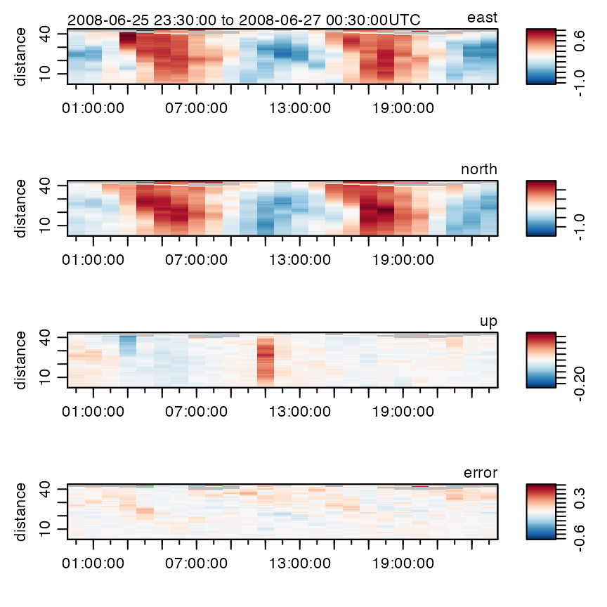
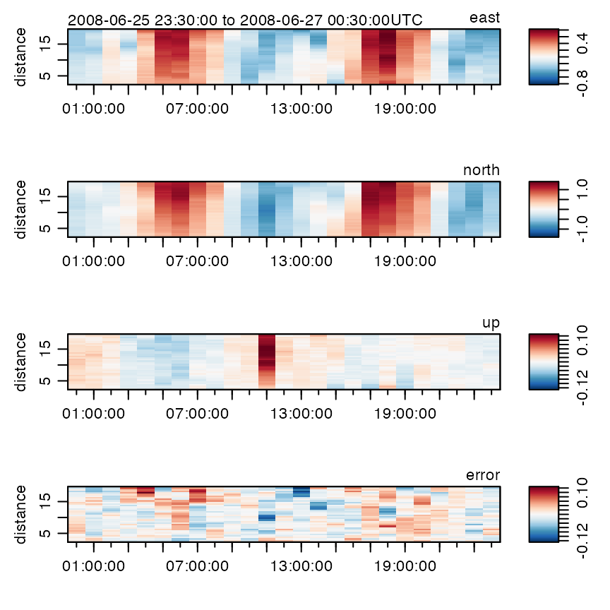
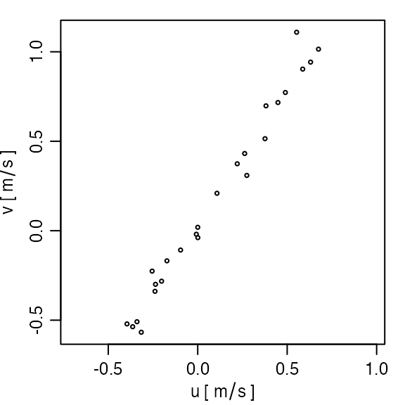
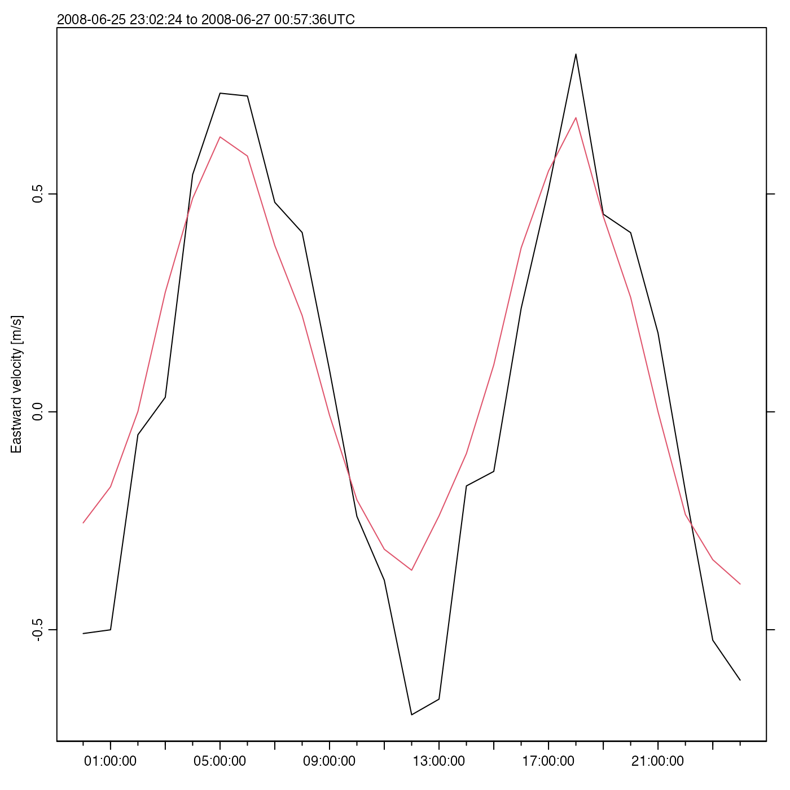
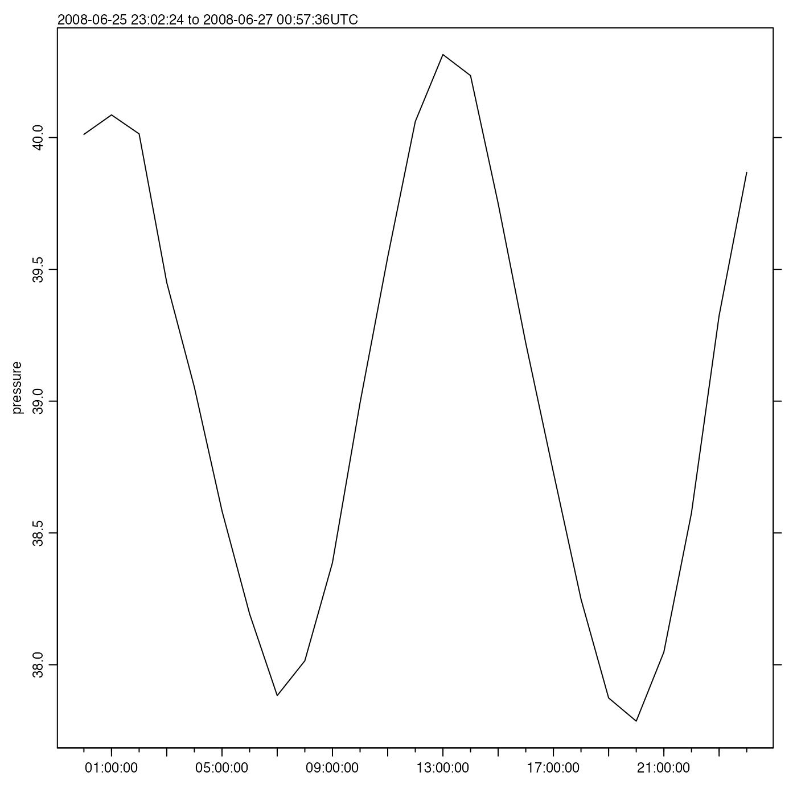
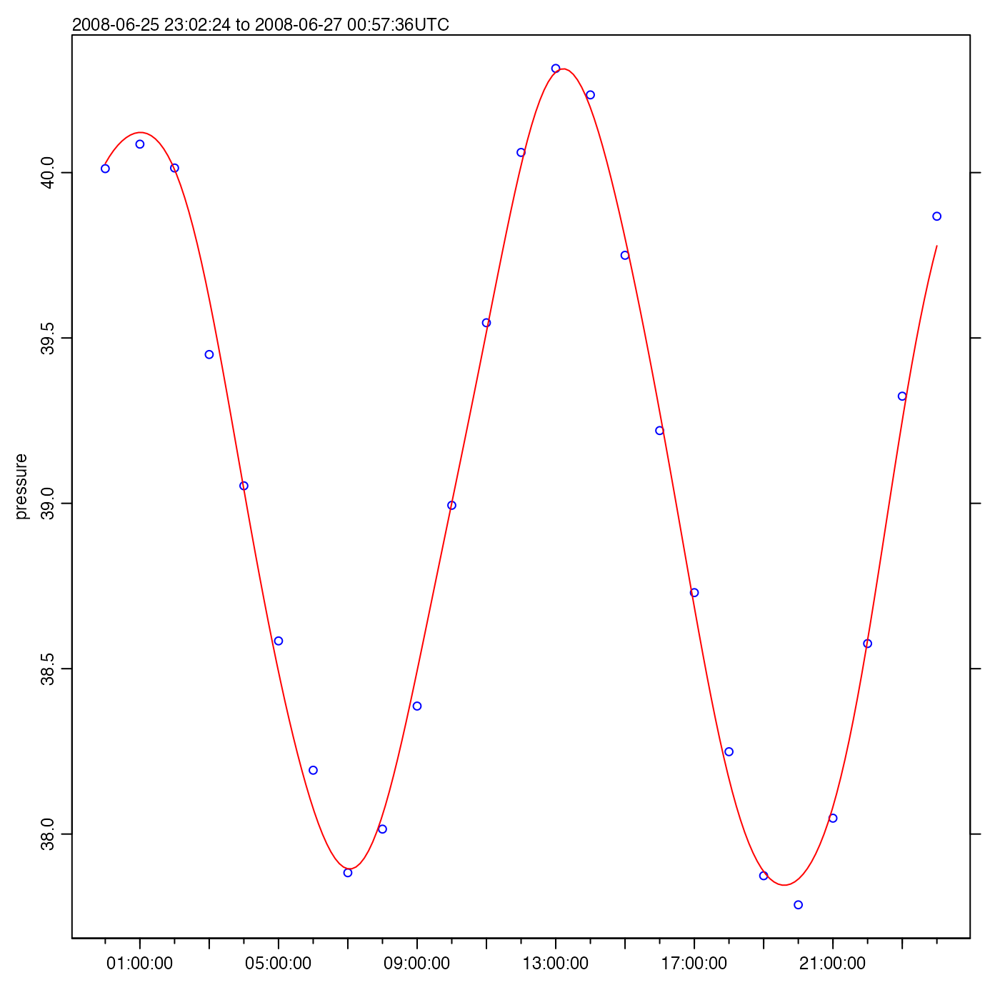

3. Analysis of acoustic-Doppler data
Dan Kelley (https://orcid.org/0000-0001-7808-5911)
2022-02-18
Source:vignettes/C_adp.Rmd
C_adp.RmdAbstract. This vignette explains the basics of using the oce package to handle measurements made by both mooring and ship based acoustic Doppler profilers. As in the related vignette about working with data-quality flags, the material is organized to reflect typical workflow. See the main oce vignette for general information about oce. The sample code provided here relies on the oce package, loaded as follows.
Reading adp files
Acoustic Doppler profiling instruments are called ADCPs by some
manufacturers and ADPs by others. The class name adp is
used in oce, to handle both types. It is important to realize that there
are many data formats for data of this type, and that the files
are normally in a dense binary format that cannot be read with a text
editor. It is necessary to use software to work with such files.
Although oce can handle many file formats, and although its authors do
their best to keep up with changes to file formats (at least for popular
instruments), users will sometimes be forced to use manufacturer
software to read the data, or at least convert to a format that can be
manually read into R, and then converted to an adp object
using the as.adp() function.
Suppose f is a character string naming a data file. In
many cases,
d <- read.oce(f)will read the file, because read.oce will look inside
the file to try to guess the format. If this does not work, one ought to
try e.g.
d <- read.adp(f)which, again, will try to determine which subtype of adp file has
been provided. If that fails, it might help to try a specialized
function, such as read.adp.rdi() for an RDI file,
read.adp.nortek() for a Nortek file, or
read.adp.sontek() for a Sontek file. (Actually, each of
these can handle a variety of sub-formats).
If any of these read. functions is called with just a
single argument naming the file, then the entire dataset will be read
in. This can be slow for large files (e.g. taking of order 0.1s per Mb),
and so it can help to use the by argument, e.g. for a 138Mb
file on the author’s computer,
f <- "/data/archive/sleiwex/2008/moorings/m09/adp/rdi_2615/raw/adp_rdi_2615.000"
dall <- read.oce(f)takes 15.2s of user time, but
d100 <- read.oce(f, by=100)takes 0.2s. It is also possible to window the data, using the
from and to arguments, which (like
by) can be integers that count ensembles (or “profiles”) or
a POSIX time (see ?read.adp). For example, the adp dataset
provided by oce was read with
read.oce(f, from=as.POSIXct("2008-06-26", tz="UTC")`,
to=as.POSIXct("2008-06-27", tz="UTC"),
by="60:00"
latitude=47.88126, longitude=-69.73433)with f as defined above. This also illustrates that it
is possibly to specify the location of an instrument; the further
processing that was done to create data(adp) will be
explained in due course.
+Note: Users who are not familiar with ADP data may noticed that there is a combination of many file types when dealing with ADP data. Some of these include: .ENR, which are raw data only received from the ADP, .ENS, similar to .ENR but also contain data merged from other file types without processing, .ENX, merged data that are processed including calculations to transformed data including east, north, and vertical velocities, .STA, which are a short term average of measurements, and .LTA, which are a long term average of measurements.
Summarizing adp data
The generic function summary provides a useful overview
of an adp data object. For example,
(results not shown the goal is to encourage the user to try this!)
shows the sort of information normally present in an RDI file. Other
manufacturer types will have somewhat different summaries, because both
the metadata and the data differ from instrument to instrument. In all
cases, there will be a vector holding time (named time),
another holding the distance from instrument to the centre of a
measurement bin, measured along a line equidistant between the beams
(named distance), along with an array holding velocity
(named v). (Other arrays may include, as in this RDI case,
q for data quality, a for backscatter
amplitude, and g for percentage goodness.)
Note that the summary reveals that instrument had been set up to
record in beam coordinates, but that processing had been
done to convert to enu (east-north-up) coordinates.
Exercise 1. Determine the name of the
metadata item that holds the coordinate system of an adp
object.
After completing Exercise 1, the user will notice that both
latitude and longitude are available in the
metadata for this built-in, moored, adp dataset. It should be noted that
if this dataset was a ship-based adp dataset, then latitude
and longitude would not be included. Instead, the data
would include firstLatitude, firstLongitude,
lastLatitude, and lastLongitude, which provide
an indication of the ship drift during sampling.
Changing coordinate systems
It is critical for analysts to be aware of the coordinate system of
an adp dataset, simply because those systems are so different. In what
oce calls the beam system, velocities in each of the
acoustic beams are measured along the slant angle of the beam. These
data may be combined (using a transformation matrix which is part of the
metadata displayed with the summary() function) into what
oce calls a xyz system that is Cartesian and fixed to the
instrument. Since instruments record heading, pitch, and roll, the
xyz velocities can be converted easily to enu
velocities.
In some applications, the scientific focus is primarily on the enu
data, but it is a good idea to calculate and study the data at all
stages of processing. Thus, although the toEnu() function
will convert data measured in any coordinate system into an enu variant,
many analysts will do something along the lines of
where the declination illustrated is the value used in creating the
data(adp) dataset. (Compensating for declination is
necessary because compasses are calibrated at a particular place and
time, and compasses have no way of “knowing” the local angle between
true north and magnetic north.)
Plotting
The generic plot() function is specialized to handle adp
objects in a variety of simple but helpful ways. The type of plot is
determined by the which argument. The default for
which is to create a multi-panel image plot that shows
time-space dependence for each velocity component. The number of panels
depends on the number of beams used by the instrument, and each one has
a label indicating the component name. For example,
plot(adp)
has velocity panels named east, north and
up, along with one named error, which is an
estimate of the velocity-inference error.
Options to this plot variant can be used to control how distance from instrument is shown (which can be useful in visualizing data from upward- and downward-aligned instruments), what colours are used to represent the signals, etc.
Dozens of other plot types are also provided; see
?"plot,adp-method" for details – but be warned that a
complex plot requires many arguments!
When dealing with ship-based adp data, in order to get the true
east, north, and up velocity, the
user must remove the speed of the ship. To do this, use the
subtractBottomVelocity() function, which subtracts the
bottom tracking velocities from an adp object.
Exercise 2. Create a u-v scatterplot.
Exercise 3. Write the steps to plot the
east, north, and up velocity
without the speed of the ship for a file named
COR2019002_20190818T064815_007_000000.ENS.
Subsetting
Adp data can be subsetted in a wide variety of ways, e.g.

plots only data within 20m of the instrument. See
?"subset,adp-method" for more on subsetting.
Exercise 4. Plot the adp data for the first half of the sampling interval.
Accessing data within adp objects
All oce objects share a common framework, with so-called “slots” for
metadata, data, and processing log. It is possible to examine, and
modify, the elements of each of these slots using base R constructs, but
it is usually better to use oce accessor functions. The details are
provided with ?"[[,adp-method" and
?"[[<-,adp-method", but a few examples should suffice to
sketch the general pattern.
For example,
time <- adp[["time"]]
distance <- adp[["distance"]]extracts the times and distances of the profiles within
data(adp), while the array holding the velocities is
extract with
v <- adp[["v"]]Altering values uses the [[ to the left of the
assignment operator, but this is not commonly required in simple work,
so it is best for readers to focus first on accessing data. The
exercises may help with this.
Some of the fields contained in adp objects, particularly the
amplitude, correlation, and percent good fields (a,
q, and g) are stored as raw-type.
This is done primarly to save memory space, as expanded all of those
fields into numeric types can be slow and they get large
quickly. However, to actually work with the numbers, users can extract a
“numeric” version by supplying the second argument to the
[[ function, e.g.
a <- adp[["a", "numeric"]]This has the advantage of returning an object with the same matrix
dimensions as the original (note that functions like
as.numeric() typically discard dimension information,
thereby converting an array to a vector).
Exercise 5. Plot a time series of mid-depth and depth-averaged eastward velocities.
Exercise 6. Perform an eigen analysis of eastward and northward velocity.
Exercise 7. Plot a time series of pressure variations, to reveal tidal height.
Solutions to exercises
Exercise 1. Determine the name of the
metadata item that holds the coordinate system of an adp
object.
Solution.
With adp as loaded in the text, we may the names in the metadata with:
(results not shown), after which a keen eye will notice that two elements relate to coordinates:
adp[["originalCoordinate"]]
#> [1] "beam"
adp[["oceCoordinate"]]
#> [1] "enu"and comparison with the output of summary(adp) reveals
that the former is the coordinate system in which the data were
originally measured, while the latter is the coordinate system of the
transformed data. Using
processingLogShow(adp)
#> * Processing Log
#>
#> - 2019-08-12 15:29:36 UTC: `read.oce("/data/archive/sleiwex/2008/moorings/m09/adp/rdi_2615/raw/adp_rdi_2615.000", ...)`
#> - 2019-08-12 15:29:36 UTC: `beamToXyzAdp(x = beam)`
#> - 2019-08-12 15:29:36 UTC: `xyzToEnuAdp(x, declination=-18.1, debug=0)`reveals the steps in the data transformation.
Exercise 2. Create a u-v scatterplot.
Solution.
plot(adp, which="uv")
Exercise 3. Write the steps to plot the
east, north, and up velocity
without the speed of the ship for a file named
COR2019002_20190818T064815_007_000000.ENS.
Solution.
library(oce)
adcp <- read.adp("COR2019002_20190818T064815_007_000000.ENS")
enu <- toEnu(adcp)
removeShipSpeed <- subtractBottomVelocity(enu)
plot(removeShipSpeed, which=1:3)Exercise 4. Plot the adp data for the first half of the sampling interval.
Solution.

Exercise 5. Plot a time series of mid-depth and depth-averaged eastward velocities.
Solution.
time <- adp[["time"]]
v <- adp[["v"]]
# The second index is for bin number, the third for beam number
midIndex <- dim(v)[2]/2
eastMid <- v[, midIndex, 1] # third index is beam
distance <- adp[["distance"]][midIndex]
oce.plot.ts(time, eastMid, ylab="Eastward velocity [m/s]")
## Depth mean; note that na.rm, is passed by apply() to mean()
eastMean <- apply(v[,,1], 1, mean, na.rm=TRUE)
lines(time, eastMean, col=2)
legend("top", lwd=1, col=1:2,
legend=c(paste("At", distance, "m"), "Depth Avg"))
Here, oce.plot.ts() is used instead of the basic R
function plot(), because it provides a margin note on the
detailed time interval.
Exercise 6. Perform an eigen analysis of eastward and northward velocity.
Solution.
u <- adp[["v"]][,,1]
v <- adp[["v"]][,,2]
ok <- is.finite(u) & is.finite(v) # remove NA values
u <- u[ok]
v <- v[ok]
eigen(cov(data.frame(u, v)))
#> eigen() decomposition
#> $values
#> [1] 0.48350161 0.01557049
#>
#> $vectors
#> [,1] [,2]
#> [1,] 0.5441538 -0.8389855
#> [2,] 0.8389855 0.5441538Note that this action is equivalent to principal component analysis, and it might be wiser to use
pr <- prcomp(data.frame(u,v))to do the analysis, which yields the same principal axes
pr
#> Standard deviations (1, .., p=2):
#> [1] 0.6953428 0.1247818
#>
#> Rotation (n x k) = (2 x 2):
#> PC1 PC2
#> u 0.5441538 -0.8389855
#> v 0.8389855 0.5441538but has the advantage of having associated methods, including for plotting.
Exercise 7. Plot a time series of pressure variations, to reveal tidal height.
Solution.
time <- adp[["time"]]
pressure <- adp[["pressure"]]
oce.plot.ts(time, pressure)
As a matter of interest, a tidal analysis may be done with
m <- tidem(as.sealevel(pressure, time))
#> Note: the tidal record is too short to fit for constituents: SA SSA MSM MM MSF MF ALP1 2Q1 SIG1 Q1 RHO1 O1 TAU1 BET1 NO1 CHI1 PI1 P1 S1 PSI1 PHI1 THE1 J1 SO1 OO1 UPS1 OQ2 EPS2 2N2 MU2 N2 NU2 GAM2 H1 H2 MKS2 LDA2 L2 T2 S2 R2 K2 MSN2 ETA2 MO3 M3 SO3 MK3 SK3 MN4 M4 SN4 MS4 MK4 S4 SK4 2SK5 2MN6 M6 2MS6 2MK6 2SM6 MSK6 M8where the list of undetermined tidal constituents is long, because
this tidal record is so short (see ?tidem). The fitted
constituents are as follows
summary(m)
#> tidem summary
#> -------------
#>
#> Call:
#> tidem(t = as.sealevel(pressure, time))
#> RMS misfit to data: 0.06615227
#>
#> Fitted Model:
#> Freq Amplitude Phase p
#> Z0 0.0000 39.0465 0.0 < 2e-16 ***
#> K1 0.0418 0.0689 334.9 0.089 .
#> M2 0.0805 1.1730 203.8 4.6e-16 ***
#> 2MK5 0.2028 0.0312 112.8 0.417
#> 3MK7 0.2833 0.0265 87.8 0.618
#> ---
#> Signif. codes: 0 '***' 0.001 '**' 0.01 '*' 0.05 '.' 0.1 ' ' 1
#> * Processing Log
#>
#> - 2022-02-18 12:04:52 UTC: `create 'tidem' object`
#> - 2022-02-18 12:04:52 UTC: `tidem(t = as.sealevel(pressure, time))`(Note that it fitted for M2, but not S2, because the Rayleigh criterion prevents inferring both, and the conventional tidal analysis favours M2 over S2 if the time series is too short to fit for more than one semi-diurnal constituent.)
A useful step might be to draw a tidal fit along with the data. It
makes sense to construct a finer time grid, to get a smooth curve, as in
the following (see ?predict.tidem).
oce.plot.ts(time, pressure, type="p", col="blue")
timePredict <- seq(min(time), max(time), length.out=200)
pressurePredict <- predict(m, timePredict)
lines(timePredict, pressurePredict, col="red")